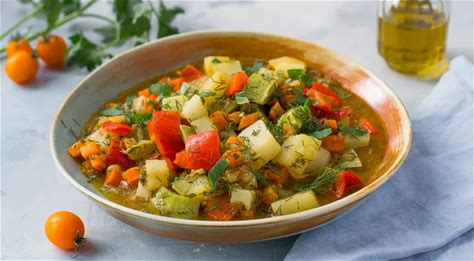

Рецепт 5: Овощное рагу

Сытное и полезное овощное рагу, идеально подходящее для быстрого ужина.
Ингредиенты:
- 2 средних картофелины
- 1 морковь
- 1 кабачок
- 1 сладкий перец
- 1 луковица
- 2 зубчика чеснока
- 200 мл овощного бульона
- 2 ст.л. оливкового масла
- Соль и перец по вкусу
- Свежая зелень для подачи (по желанию)
Приготовление:
1. **Подготовьте овощи**:
- Очистите картофель и нарежьте его кубиками размером около 1 см. Это поможет ему быстрее приготовиться.
- Очистите морковь и нарежьте её тонкими кружочками или полукружьями.
- Кабачок нарежьте кубиками, аналогично картофелю.
- Сладкий перец очистите от семян и нарежьте его ломтиками или кубиками.
- Луковицу нарежьте мелко, а чеснок измельчите с помощью ножа или чеснокодавилки.
2. **Обжарьте лук и чеснок**:
- В глубокой сковороде или кастрюле нагрейте оливковое масло на среднем огне.
- Добавьте нарезанный лук и обжаривайте его 2-3 минуты, пока он не станет прозрачным.
- Затем добавьте измельченный чеснок и обжаривайте ещё 1 минуту, пока не появится аромат. Будьте осторожны, чтобы не сжечь чеснок.
3. **Добавьте овощи**:
- В сковороду добавьте нарезанный картофель, морковь и сладкий перец. Хорошо перемешайте.
- Обжаривайте овощи 5-7 минут, помешивая время от времени, чтобы они слегка подрумянились и стали мягче.
4. **Добавьте кабачок и бульон**:
- После обжаривания добавьте нарезанный кабачок в сковороду.
- Затем влейте овощной бульон, чтобы овощи были покрыты жидкостью. Если бульона недостаточно, можно добавить немного воды.
- Посолите и поперчите по вкусу, перемешайте все ингредиенты.
5. **Тушите рагу**:
- Уменьшите огонь до минимального, накройте сковороду крышкой и тушите рагу 15-20 минут.
- Периодически открывайте крышку и проверяйте готовность овощей. Они должны стать мягкими, но не разваренными.
6. **Подача**:
- Когда овощи будут готовы, снимите сковороду с огня.
- Подавайте рагу горячим, посыпав свежей зеленью, если желаете. Это добавит свежести и аромата.
Назад к рецептам